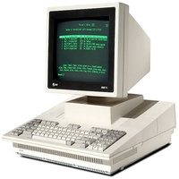

КОМПЬЮТЕРНАЯ ТЕХНИКА
Компьютерная техника — комплексное понятие, описывающее весь спектр производимых компьютерных систем, от небольшого наладонника до сверхмощного суперкомпьютера. В последнее время часто этим понятием обобщают также периферийное и офисное оборудование, а иногда даже комплектующие для различных типов компьютеров, описываемые иначе, как аппаратное обеспечение. Тем не менее, чаще всего, говоря о компьютерной технике, подразумевают сами компьютеры или отдельно стоящее оборудование, которое работает совместно с компьютерами и обеспечивает некоторую дополнительную функциональность (печать или сканирование документов, доступ к Сети, защиту от сбоев питания и т. п.).
Понятие компьютерной техники вбирает в себя не только аппаратное, но также и программное обеспечение, устанавливаемое на данного типа устройствах и обеспечивающее поддержку выполнения их базовых функций. Практически, сами устройства и работающие на них программы рассматриваются в рамках него, как составляющие единого аппаратно-программного комплекса.
Аппаратно-программный комплекс — совокупность технических и программных средств, позволяющая автоматизировать выполнение комплекса задач и обеспечивающая функционирование электронных информационных ресурсов и информационных систем.
ВВЕДЕНИЕ
Слово «компьютер» означает «вычислитель», т.е. устройство для вычислений. В наше время трудно представить себе, что без компьютеров можно обойтись. А ведь не так давно, до начала 70-х годов вычислительные машины были доступны весьма ограниченному кругу специалистов, а их применение, как правило, оставалось окутанным завесой секретности и мало известным широкой публике. Однако в 1971 году произошло событие, которое в корне изменило ситуацию и с фантастической скоростью превратило компьютер в повседневный рабочий инструмент десятков миллионов людей. В том, вне всякого сомнения знаменательном году еще почти никому не известная фирма Intel из небольшого американского городка с красивым названием Санта-Клара (шт. Калифорния), выпустила первый микропроцессор. Именно ему мы обязаны появлением нового класса вычислительных систем – персональных компьютеров, которыми теперь пользуются, по существу, все, от учащихся начальных классов и бухгалтеров до ученых и инженеров. В данном реферате мы рассмотрим историю развития вычислительной техники от древности до наших дней, а также краткий обзор о возможностях применения современных вычислительных систем и дальнейшие тенденции развития персональных компьютеров. Знание истории развития вычислительной техники как основы компьютерной информатики – необходимый составной элемент компьютерной культуры
МЕХАНИЧЕСКИЙ ЭТАП СОЗДАНИЯ КОМПЬЮТЕРА
.jpg)
Принято считать, что первые, как тогда их называли вычислители, появились в XVII веке и на протяжение четырех веков множество талантливых людей приложили свои усилия для создания современного компьютера, ставшего неотъемлемой частью каждой квартиры или офиса. Но самых первых изобретателей компьютеров безусловно надо знать. В 1623 году Вильгельм Шиккард изобрел и построил первую работающую модель 6-ти разрядного механического вычислительного устройства, которое могло выполнять простейшие арифметические действия: сложение и вычитание с семизначными числами. Описание машины Шиккарда, к сожалению, оказалось утраченным во время Тридцатилетней войны. В 1642 году Блез Паскаль сконструировал 8-разрядную суммирующую машину. Эта машина представляла собой комбинацию взаимосвязанных колесиков с нанесенными на них цифрами от 0 до 9 и приводов. Когда первое колесико делало полный оборот от 0 до 9, в действие автоматически приводилось второе колесико. Когда и оно достигало цифры 9, начинало вращаться третье и так далее. Машина Паскаля могла складывать и вычитать, умножать (делить) лишь путем многократного сложения (вычитания). В 1668 году появился новый вычислитель, предназначенный исключительно для финансовых операций. Его изобретателем стал стал сэр Самюэль Морланд. В 1674 году великий философ и ученый Готфрид Вильгельм Лейбниц сконструировал машину «четырех действий», которая выполняла сложение, вычитание, умножение, деление и извлечение квадратного корня. В отличие от Паскаля Лейбниц использовал в своей машине не колесики и приводы, а цилиндры с нанесенными на них цифрами. Специально для нее Лейбниц впервые применил двоичную систему счисления, использующую вместо обычных для человека десяти цифр две: 0 и 1. Следующая волна конструкторов-изобретателей компьютеров была замечена только в XIX веке, два века спустя после первых счетных машин и вычислителей. В 1820 году учёный и изобретатель Шарль де Кольмар придумал самый настоящий калькулятор и назвал его арифмометр. Как и многие его предшественники, арифмометр был механическим устройством. Впервые счетное устройство выпускалось серийно и поступило в широкую продажу. С некоторыми усовершенствованиями в конструкции арифмометры прослужили человеку в общей сложности 90 лет! В 1822 году английский математик Чарлз Бэббидж описал машину, способную рассчитывать и печатать большие математические таблицы, и сконструировал машину для табулирования, состоявшую из валиков и шестеренок, вращаемых с помощью рычага. Машина могла производить некоторые математические вычисления с точностью до восьмого знака после запятой. Это был прообраз его разностной машины, к постройке которой он приступил в 1823 году, получив правительственную субсидию для продолжения работ. Разностная машина должна была производить вычисления с точностью до 20 знака после запятой. Постройка машины отняла у Бэббиджа 10 лет, ее конструкция становилась все более сложной, громоздкой и дорогой. Она так и не была закончена, финансирование проекта было прекращено. Тем временем Бэббиджем овладела идея создания нового прибора — аналитической машины. Главное ее отличие от разностной машины заключалось в том, что она была программируемой и могла выполнять любые заданные ей вычисления. По существу аналитическая машина стала прообразом современных компьютеров, так как включала их основные элементы: память, ячейки которой содержали бы числа, и арифметическое устройство, состоящее из рычагов и шестеренок. Бэббидж предусмотрел возможность вводить в машину инструкции при помощи перфокарт. Однако и эта машина не была закончена, поскольку низкий уровень технологий того времени стал главным препятствием на пути ее создания. В 1886 году Дорр Фелт создаёт устройство с необычным названием <<Комптометр>>. Это было первое устройство с возможностью ввода данных с клавиатуры. Тысячи людей восхищались необыкновенными устройствами. Они без устали крутили ручки рифмометров, производя различные математические расчеты.
ЭЛЕКТРОМЕХАНИЧЕСКИЙ ЭТАП
.jpg)
Электромеханический этап развития ВТ явился наименее продолжительным и охватывает около 60 лет – от первого табулятора Г. Холлерита до первой ЭВМ ENIAK (1945) В 1888 Герман Холлерит (американский инженер, изобретатель первой электромеханической счетной машины — табулятора, основатель фирмы — предшественницы IBM) сконструировал электромеханическую машину, которая могла считывать и сортировать статистические записи, закодированные на перфокартах. Эта машина, названная табулятором, состояла из реле, счетчиков, сортировочного ящика. Данные на каждого человека наносились на перфокарты, почти не отличающиеся от современных, в виде пробивок. При прохождении перфокарты через машину данные, отмеченные дырочками, снимались путем прощупывания системой игл. Если напротив иглы оказывалось отверстие, то игла, пройдя сквозь него, касалась металлической поверхности, расположенной под картой. Возникавший таким образом контакт замыкал электрическую цепь, благодаря чему к результатам расчетов автоматически добавлялась единица, после чего перфокарта попадала в определенное отделение сортировочного ящика. В 1890 изобретение Холлерита было впервые использовано для 11-й американской переписи населения. Успех вычислительных машин с перфокартами был феноменален. То, чем десятилетием ранее 500 сотрудников занимались в течение семи лет, Холлерит сумел выполнить с 43 помощниками на 43 вычислительных машинах за 4 недели. Это изобретение имело успех не только в США, но и в Европе, где стало широко применяться для статистических исследований. Несколько таких машин закупила Россия. Холлерит был удостоен нескольких премий и получил звание профессора Колумбийского университета. В 1896 он организовал в Нью-Йорке компанию по производству машин для табуляции (Tabulating Machine Company), которая впоследствии выросла в International Business Machines Corporation — IBM. В 1938 Цузе в домашних условиях собрал электромеханическую машину Z1. Машина имела клавиатуру для ввода задач и панель с лампочками, на которой высвечивался результат. Затем Цузе заменил неудобное печатающее устройство на перфоленту, которую изготовил из старой 35-миллиметровой пленки, и назвал новую модель Z2. Когда началась война, Цузе получил поддержку германского правительства на разработку компьютера для военных целей — конструирования самолетов и ракет. В 1941, на два года опередив Эйкена, Цузе создал третью модель — Z3, основанную на электромеханических реле и работавшую в двоичной системе счисления. Z3 состояла из 600 реле счетного устройства и 2000 реле устройства памяти. Числа можно было «записать» в память и «считывать» оттуда посредством электрических сигналов, которые проходили через реле. Реле либо пропускали сигнал, либо не пропускали. Машина считывала программу механически шаг за шагом (линейно) и проводила от 15 до 20 вычислительных операций в секунду. В это же время Цузе приступил к постройке Z4, в которой все механические части должны были быть заменены на электронные лампы. Во время бомбежек Берлина все машины Цузе, кроме Z4, погибли. В 1947 году сотрудники лабаратории Bell Уильям Шокли, Джон Бардин и Уолтер Берттейн создают первый в мире транзистор. Открытие транзистора – важнейшая веха в истории создания компьютеров, ведь именно транзисторы стали основой всех микропроцессоров. Скрытые внутри процессорного <<камня>> транзисторы наделяют современный компьютер думать. В 1954 году компания Texas Instruments начала серийное производство кремниевых транзисторов на промышленной основе. В 1956 году в Технологическом институте города Массачусетс создан первый компьютер на основе транзисторов. В 1958 -1959 годах Джек Килби и Роберт Нойс создают интегральную микросхему – первый прототип современных микропроцессоров. Мне бы хотелось рассказать о Роберте Нойсе подробней. НОЙС (Noyce) Роберт (12 декабря 1927, Берлингтон, шт. Айова — 3 июня 1990, Остин, шт. Техас), американский инженер, изобретатель (1959) интегральной схемы, системы взаимосвязанных транзисторов на единой кремниевой пластинке, основатель (1968, совместно с Г. Муром) корпорации Intel. В 1949 Нойс окончил Гриннелл-колледж в Айове со степенью бакалавра, а в 1953 получил докторскую степень в Массачусетском технологическом институте. В 1956-57 работал в полупроводниковой лаборатории изобретателя транзисторов У. Шокли, а затем вместе с семью коллегами уволился и основал одну из первых электронных фирм по производству кремниевых полупроводников — Fairchild Semiconductor (Фэрчайлд Семикондактор), которая дала название Силиконовой долине в Северной Калифорнии. Одновременно, но независимо друг от друга Нойс и Килби изобрели интегральную микросхему. В 1968 Нойс и его давний коллега Мур основали корпорацию Intel. Спустя два года они создали 1103-ю запоминающую микросхему из кремния и поликремния, которая заменила собой прежние малоэффективные керамические сердечники в запоминающих устройствах компьютеров. В 1971 Intel представила микропроцессор, объединяющий в одной микросхеме функции запоминающего устройства и процессора. Вскоре корпорация Intel стала лидером по производству микропроцессоров. В 1988 Нойс стал президентом корпорации Sematech, исследовательского консорциума, финансируемого совместно промышленным капиталом и правительством США с целью развития передовых технологий в американской полупроводниковой промышленности.
ЭТАП СОВРЕМЕННЫХ ЭВМ

Современный этап развития ЭВМ охватывает период с 1970 года до наших дней. Впервые стали применяться большие интегральные схемы (БИС), которые по мощности примерно соответствовали 1000 ИС. Это привело к снижению стоимости производства компьютеров. В 1980 г. центральный процессор небольшой ЭВМ оказалось возможным разместить на кристалле площадью 1/4 дюйма (0,635 см2.). БИСы применялись уже в таких компьютерах, как “Иллиак”, ”Эльбрус”, ”Макинтош ”. Быстродействие таких машин составляет тысячи миллионов операций в секунду. Емкость ОЗУ возросла до 500 млн. двоичных разрядов. В таких машинах одновременно выполняются несколько команд над несколькими наборами операндов. C точки зрения структуры машины этого поколения представляют собой многопроцессорные и многомашинные комплексы, работающие на общую память и общее поле внешних устройств. Ёмкость оперативной памяти порядка 1 - 64 Мбайт. Распространение персональных компьютеров к концу 70-х годов привело к некоторому снижению спроса на большие ЭВМ и мини-ЭВМ. Это стало предметом серьезного беспокойства фирмы IBM (International Business Machines Corporation) — ведущей компании по производству больших ЭВМ, и в 1979 г. фирма IBM решила попробовать свои силы на рынке персональных компьютеров, создав первые персональные компьютеры- IBM PC.
РОЛЬ ВЫЧИСЛИТЕЛЬНОЙ ТЕХНИКИ В ЖИЗНИ ЧЕЛОВЕКА
Персональный компьютер быстро вошел в нашу жизнь. Еще несколько лет назад было редкостью увидеть какой-нибудь персональный компьютер – они были, но были очень дорогие, и даже не каждая фирма могла иметь у себя в офисе компьютер. Теперь же в каждом третьем доме есть компьютер, который уже глубоко вошел в жизнь человека. Современные вычислительные машины представляют одно из самых значительных достижений человеческой мысли, влияние, которого на развитие научно-технического прогресса трудно переоценить. Область применения ЭВМ огромна и непрерывно расширяется. Даже 30 лет назад было только около 2000 различных сфер применения микропроцессорной техники. Это управление производством (16%), транспорт и связь (17%), информационно-вычислительная техника (12%), военная техника (9%), бытовая техника (3%), обучение (2%), авиация и космос (15%), медицина (4%), научное исследование, коммунальное и городское хозяйство, банковский учёт, метрология, и другие области. Компьютеры в учреждениях. Компьютеры в буквальном смысле совершили революцию в деловом мире. Секретарь практически любого учреждения при подготовке докладов и писем производит обработку текстов. Учрежденческий аппарат использует персональный компьютер для вывода на экран дисплея широкоформатных таблиц и графического материала. Бухгалтеры применяют компьютеры для управления финансами учреждения и введение документации. Компьютеры на производстве. Компьютеры находят применение при выполнении широкого круга производственных задач. Так, например, диспетчер на крупном заводе имеет в своём распоряжении автоматизированную систему контроля, обеспечивающую бесперебойную работу различных агрегатов. Компьютеры используются также для контроля за температурой и давлением при осуществлении различных производственных процессов. Также управляются компьютером роботы на заводах, скажем, на линиях сборки автомобилей, включающие многократно повторяющиеся операции, например затягивание болтов или окраску деталей кузова. Компьютер – помощник конструктора. Проекты конструирования самолета, моста или здания требуют затрат большого количества времени и усилий. Они представляют собой один из самых трудоёмких видов работ. Сегодня, в век компьютера, конструкторы имеют возможность посвятить своё время целиком процессу конструирования, поскольку расчёты и подготовку чертежей машина «берёт на себя». Пример: конструктор автомобилей исследует с помощью компьютера, как форма кузова влияет на рабочие характеристики автомобиля. С помощь таких устройств, как электронное перо и планшет, конструктор может быстро и легко вносить любые изменения в проект и тут же наблюдать результат на экране дисплея. Компьютер в магазине самообслуживания. Представьте себе, что идёт 1979 год и вы работаете неполный рабочий день в качестве кассира в большом универмаге. Когда покупатели выкладывают отобранные ими покупки на прилавок, вы должны прочесть цену каждой покупки и ввести её в кассовый аппарат. А теперь вернёмся в наши дни. Вы по-прежнему работаете кассиров и в том же самом универмаге. Но как много здесь изменилось. Когда теперь покупатели выкладывают свои покупки на прилавок, вы пропускаете каждую из них через оптическое сканирующее устройство, которое считывает универсальный код, нанесённый на покупку, по которому компьютер определяет, цену этого изделия, хранящуюся в памяти компьютера, и высвечивает ее на маленьком экране, чтобы покупатель мог видеть стоимость своей покупки. Как только все отобранные товары прошли через оптическое сканирующее устройство, компьютер немедленно выдаёт общую стоимость купленных товаров. Компьютер в банковских операциях. Выполнение финансовых расчётов с помощью домашнего персонального компьютера – это всего лишь одно из его возможных применений в банковском деле. Мощные вычислительные системы позволяют выполнять большое количество операций, включая обработку чеков, регистрацию изменения каждого вклада, приём и выдачу вкладов, оформление ссуды и перевод вкладов с одного счёта на другой или из банка в банк. Кроме того, крупнейшие банки имеют автоматические устройства, расположенные за пределами банка. Банковские автоматы позволяют клиентам не выстаивать длинных очередей в банке, взять деньги со счета, когда банк закрыт. Всё, что требуется, - вставить пластмассовую банковскую карточку в автоматическое устройство. Как только это сделано, необходимые операции будут выполнены. Компьютер в медицине. Как часто вы болеете? Вероятно, у вас была простуда, ветрянка, болел живот? Если в этих случаях вы обращались к доктору, скорее всего он проводил осмотр быстро и достаточно эффективно. Однако медицина – это очень сложная наука. Существует множество болезней, каждая из которых имеет только ей присущие симптомы. Кроме того, существуют десятки болезней с одинаковыми и даже совсем одинаковыми симптомами. В подобных случаях врачу бывает трудно поставить точный диагноз. И здесь ему на помощь приходит компьютер. В настоящее время многие врачи используют компьютер в качестве помощника при постановке диагноза, т.е. для уточнения того, что именно болит у пациента. Для этого больной тщательно обследуется, результаты обследования сообщаются компьютеру. Через несколько минут компьютер сообщает, какой из сделанных анализов дал аномальный результат. При этом он может назвать возможный диагноз. Компьютер в сфере образования. Сегодня многие учебные заведения не могут обходиться без компьютеров. Достаточно сказать, что с помощью компьютеров: трёхлетние дети учатся различать предметы по их форме; шести- и семилетние дети учатся читать и писать; выпускники школ готовятся к вступительным экзаменам в высшие учебные заведения; студенты исследуют, что произойдёт, если температура атомного реактора превысит допустимый предел. «Машинное обучение» – термин, обозначающий процесс обучения при помощи компьютера. Последний в этом случае выступает в роли «учителя». В этом качестве может использоваться микрокомпьютер или терминал, являющийся частью электронной сети передачи данных. Процесс усвоения учебного материала поэтапно контролируется учителем, но если учебный материал даётся в виде пакета соответствующих программ ЭВМ, то его усвоение может контролироваться самим учащимся. Компьютеры на страже закона. Вот новость, которая не обрадует преступника: «длинные руки закона» теперь обеспечены вычислительной техникой. «Интеллектуальная» мощь и высокое быстродействие компьютера, его способность обрабатывать огромное количество информации, теперь поставлены на службу правоохранительных органов для повышения эффективности работы. Способность компьютеров хранить большое количество информации используется правоохранительными органами для создания картотеки преступной деятельности. Электронные банки данных с соответствующей информацией легко доступны государственным и региональным следственным учреждениям всей страны. Так, федеральное бюро расследования (ФБР) располагает общегосударственным банком данных, который известен как национальный центр криминалистической информации. Компьютеры используются правоохранительными органами не только в информационных сетях ЭВМ, но и в процессе розыскной работы. Например, в лабораториях криминалистов компьютеры помогаю проводить анализ веществ, обнаруженных на месте преступления. Заключения компьютера-эксперта часто оказываются решающими в доказательствах по рассматриваемому делу. Компьютер как средство общения людей. Если на одном компьютере работают хотя бы два человека, у них уже возникает желание использовать этот компьютер для обмена информацией друг с другом. На больших машинах, которыми пользуются одновременно десятки, а то и сотни человек, для этого предусмотрены специальные программы, позволяющие пользователям передавать сообщения друг другу. Стоит ли говорить о том, что как только появилась возможность объединять несколько машин в сеть, пользователи ухватились за эту возможность не только для того, чтобы использовать ресурсы удаленных машин, но и чтобы расширить круг своего общения. Создаются программы, предназначенные для обмена сообщениями пользователей, находящихся на разных машинах. Наиболее универсальное средство компьютерного общения – это электронная почта. Она позволяет пересылать сообщения практически с любой машины на любую, так как большинство известных машин, работающих в разных системах, ее поддерживают. Электронная почта - самая распространенная услуга сети Internet. В настоящее время свой адрес по электронной почте имеют приблизительно 20 миллионов человек. Посылка письма по электронной почте обходится значительно дешевле посылки обычного письма. Кроме того сообщение, посланное по электронной почте дойдет до адресата за несколько часов, в то время как обычное письмо может добираться до адресата несколько дней, а то и недель. Internet - глобальная компьютерная сеть, охватывающая весь мир. Сегодня Internet имеет около 15 миллионов абонентов в более чем 150 странах мира. Ежемесячно размер сети увеличивается на 7-10%. Internet образует как бы ядро, обеспечивающее связь различных информационных сетей, принадлежащих различным учреждениям во всем мире, одна с другой. Internet предоставляет уникальные возможности дешевой, надежной и конфиденциальной глобальной связи по всему миру. Это оказывается очень удобным для фирм имеющих свои филиалы по всему миру, транснациональных корпораций и структур управления. Обычно, использование инфраструктуры Internet для международной связи обходится значительно дешевле прямой компьютерной связи через спутниковый канал или через телефон.
ЗАКЛЮЧЕНИЕ
Выше мы рассмотрели историю и современное состояние компьютерной техники. Уже сейчас вычислительная техника достигла просто потрясающих высот. Так в 2002 году для Института наук о земле в городе Йокогама (Япония) корпорацией NEC был создан наимощнейший на сегодняшний день суперкомпьютер Eerth Simulator. Производительность новой машины, определенная при помощи стандартных тестов Linpack, составляет 35,6 TELOPS(триллионов операций с плавающей запятой в секунду). Если сопоставить полученные результаты с показателями, приведенными в перечне Top 500 (рейтинг 500 наиболее мощных компьютеров мира), становится ясно, что Earth Simulator работает быстрее, чем 18 лучших по предыдущему рейтингу, машин вместе взятых. Каковы же перспективы совершенствования персональных компьютеров, и что нас ожидает в дальнейшем в этой сфере? Сотрудникам Белловских лабораторий удалось создать транзистор размером в 60 атомов! Они считают, что транзисторы ко дню своего шестидесятилетия (2007 год) по ряду параметров достигнут физических пределов. Так, размер транзистора должен стать чуть меньше 0,01 мкм (уже достигнут размер 0,05 мкм). Это означает, что на чипе площадью 10 кв. см можно будет разместить 20 000 000 транзисторов. Описывая бурно развивающуюся в настоящее время технологию производства пластиковых транзисторов, ученые приходят к достаточно логичному выводу, что сумма всех усовершенствований приведет к созданию «финального компьютера», более мощного, чем современные рабочие станции. Компьютер этот будет иметь размер почтовой марки и, соответственно, цену, не превышающую цены почтовой марки. Представим себе, наконец, гибкий экран телевизора или компьютерного монитора, который не разобьется, если швырнуть его на землю. А что можно сказать о пластинке величиной с обычную кредитную карточку, заполненной массой нужнейшей информации, включая ту, которая обычно и хранится в кредитной карточке, но выполненной из такого материала, что она никогда не потребует замены? В последнее время высказывались и мысли о том, что давно пора расстаться с электронами как основными действующими лицами на сценах микроэлектроники и обратиться к фотонам. Использование фотонов якобы позволит изготовить процессор компьютера размером с атом. О том, что наступление эпохи таких компьютеров уже не за горами говорит тот факт, что американским ученым удалось на доли секунды остановить фотонный пучок (луч света)...